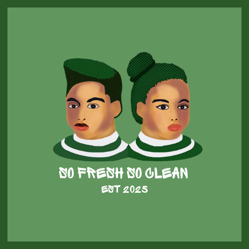

So Fresh So Clean.
Bringing mental health resources into the places Brooklyn already trusts — its salons, barbershops, and beauty spaces. Led by Kemi, Seun, Cherise, Jay & Naima.

Overview
So Fresh So Clean is a Global Shapers Community initiative brings mental health resources into salons, barbershops, and beauty spaces. Partnering with cosmetologists and beauty professionals, the project provides them with resources to support the well-being of their clients.
We do this by distributing Mental Health First Aid Kits, zines, and local support directories to foster emotionally safe spaces. We also host events led by mental health experts and licensed professionals to train cosmetology professionals and equip them with mental health resources of their own. Our programming reaches cosmetologists and their clients broadly, with a special focus on youth and communities historically and culturally disconnected from mental health and well-being resources. Through this work, we're turning these everyday third spaces into destinations for support and well-being in communities around the world.
With over 10 hubs across the Americas, Caribbean, Middle East, Africa, and Asia are participating, this initiative turns beauty spaces into gateways for mental wellness, empowering professionals and clients alike to connect, heal, and thrive together. Now cosmetologists and beauty professionals have an easy way to make the time clients spend in their chairs, hands, and care one that centers well-being, mental health prosperity, and emotional safety!
Check out our progress so far here.
The four programs
-
01
First Aid Kit
Expert-led trainings and programming for cosmetology staff, a mental health first-aid poster for beauty and barber shops, and storefront decals so clients know a shop is a safe space.
-
02
Zine
Community-led art and storytelling zines rooted in well-being and the events that have impacted Brooklyn's beauty community.
-
03
Circle
Youth programming for well-being and job force training, connecting the next generation to careers in cosmetology and community care.
-
04
Digital
A localized mental health resource database, mobilizing well-being training delivered through technology and media.
Get involved
Run a beauty business, or want to help lead a program? We'd love to hear from you.